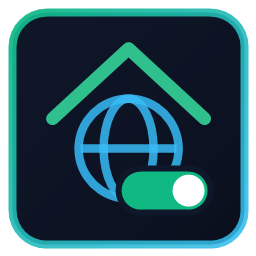
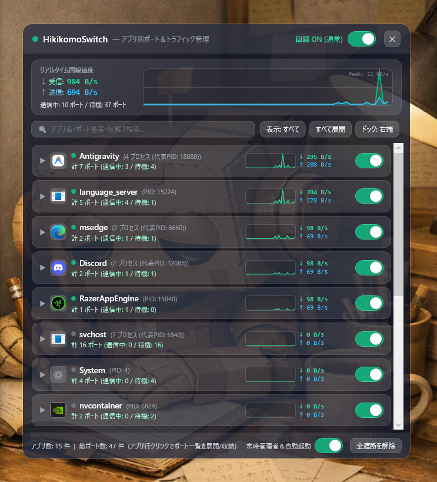
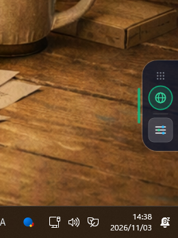

エビングハウスの忘却曲線や最新のFSRS数理モデルを追求し、最小の復習回数で確固たる記憶定着を届ける学習支援プロダクトを開発しています。
新課程・共テ演習 ＆ 語彙インストール特訓
グループは両アプリ共通です。1度参加するだけで、両方のテスト権限が付与されます。
インストールの流れ： グループ参加後、各アプリの「① Webでテスト承認」を開いて承認 ➜「② Google Play」からダウンロードできます。
Google Playの20人要件に向けて、貴アプリのテストも喜んで毎日実施いたします。
無駄な暗記・過剰な復習を徹底排除。記憶の減衰速度を数学的にモデリングし、忘れかけた最適な瞬間に再出題して長期記憶化します。
最新のFSRS理論に基づき、個人の定着度から次回インターバルを動的計算。最小の復習回数で長期記憶化を実現します。
数学のグラフや理科の実験装置図をベクターCanvasで精密描画。高精細な視覚情報を鮮明に記憶へ焼き付けます。
ストリーク（連続学習日数）、相棒（犬）の成長アルバム、ポモドーロ集中タイマー連動で、日々の反復演習を楽しく継続させます。

SmartScreen警告が出た場合：
［詳細情報］➜［実行］で起動できます（zip内 1_インストール開始.bat で自動スキップ可）。
離席中や夜間、PCを起動したままにする不安をゼロへ。物理的に回線を遮断し、不正侵入や勝手なバックグラウンド通信を1クリックで完全防止します。


お勉強ロボでは、表面的な暗記アプリではなく、脳の記憶定着メカニズム（忘却曲線 SRS）や最新の生成AIを活用し、学習者が確実に実力を伸ばせるプロダクトを追求しています。各アプリの正式リリースや最新アップデート情報を順次公開していきます。